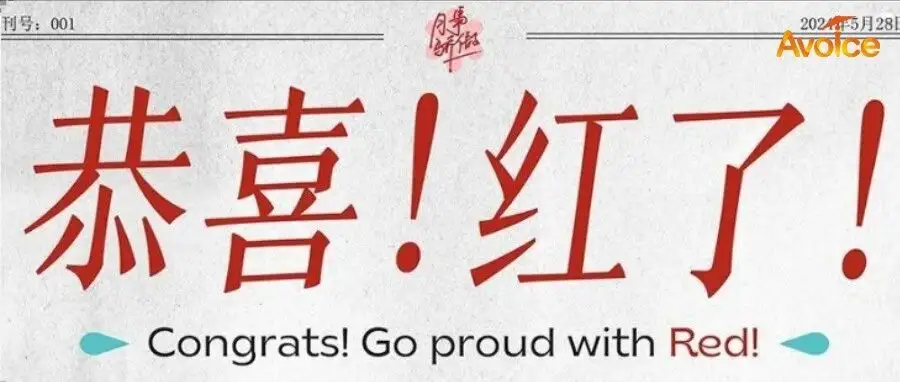

恭喜你刷到了今天#最爆的热搜#
请点击红色方块输入密令
解锁5月28日最火🔥的资讯
月经的颜色是
【
】
点击热搜词条展开详情
⬆️ click
——
——
恭喜你，跟随潮汐走过
一圈圈循环的红色
恭喜你，在月亮的见证中
完满了你的生活
预祝你，与红色一起
迎接未来崭新的每一刻
参考文献
[1]Dhanalakshmi K. T., Basit, H., & Jeanmonod, R. (2022). Physiology, menstrual cycle. National Library of Medicine, National Center for Biotechnology Information. Retrieved [20240521],
[2]https://www.businessinsider.com/guides/health/reproductive-health/why-does-my-period-smell-so-bad.
[3]Mathur, N. (2020). Effectiveness Of Exercise In Menstruation Symptoms In Late Adolescents (17-20 Years Of Age). Inreincom, 5(2), 5.
[4]Motahari-Tabari, N., Shirvani, M. A., & Alipour, A. (2017). Comparison of the effect of stretching exercises and mefenamic acid on the reduction of pain and menstruation characteristics in primary dysmenorrhea: a randomized clinical trial. Oman medical journal, 32(1), 47.
[5]徐灵均,袁义明 & 胡晓苹.(2017).红糖在我国的现状及其与精制砂糖的对比分析.食品研究与开发(10),209-214.
[6] 吴小英（2013）.更年期话语的建构——从医界、大众文化到女性自身的叙述[J].妇女研究论丛(04)，87-94.
[7]黄盈盈.(2018). 性/别、身体与故事社会学. 社会科学文献出版社.
[8]"2023年中国卫生棉条市场现状及发展趋势分析:产销快速增长、市场培育加速” 前瞻产业研究院, 07 Nov. 2023.
[9]Martin, E. (2001). The Woman in the Body: A Cultural Analysis of Reproduction. Beacon Press.
[10]Sigmon, S. , Craner, J. , Yoon, K. L. , & Thorpe, G. . (2012). Premenstrual syndrome (pms). Encyclopedia of Human Behavior.
志愿者鸣谢
（排名不分先后，以首字母排序）
Eva
Eve
Iris
Notus
Viola
Violeta
王焱
夏夏
小葭
小许
鸭鸭
一尧
圆子
Zudy
文案｜圆子 Viola
排版｜小葭
研究支持｜王焱 Eva 夏夏 Iris